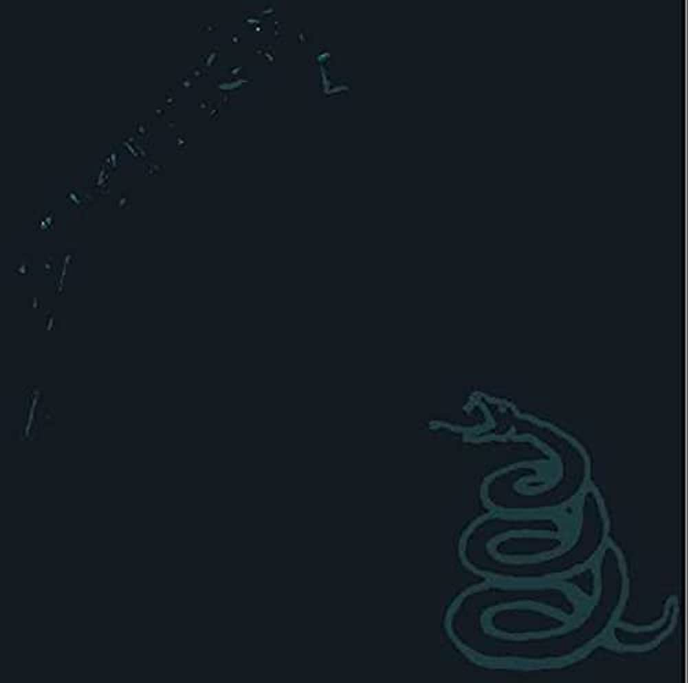

Δισκογραφία
-

Kill 'em All
Έχει πουλήσει μέχρι σήμερα πάνω από 3 εκατομμύρια αντίτυπα μόνο στις Η.Π.Α, όντας τρεις φορές πλατινένιο. Αν και ο αρχικός τίτλος του ήταν Metal Up Your Ass, άλλαξε σε Kill 'Em All μετά από παρέμβαση της δισκογραφικής. Θεωρείται ο πρώτος thrash metal δίσκος στην ιστορία της μουσικής.
-
Hit The Lights
4:17
-
The Four Horsemen
7:13
-
Motorbreath
3:08
-
Jump in the Fire
4:41
-
(Anesthesia) – Pulling Teeth
4:15
-
Whiplash
4:09
-
Phantom Lord
5:02
-
No Remorse
6:27
-
Seek & Destroy
6:55
-
Metal Militia
5:11
-
-

Ride The Lighting
Κυκλοφόρησε στις 27 Ιουλίου 1984 από τη "Megaforce Records". Το "Ride The Lightning" έγινε χρυσό στις 5 Νοεμβρίου 1987 και 5 φορές πλατινένιο στις 9 Ιουνίου 2003. Το μοναδικό σινγκλ του δίσκου είναι το τραγούδι "Creeping Death". Το 1984, μια γαλλική δισκογραφική εταιρεία εκτύπωσε κατά λάθος 400 αντίτυπα με πράσινο αντί για μπλε εξώφυλλο. Τα αντίτυπα αυτά θεωρούνται σήμερα συλλεκτικά.
-
Fight Fire With Fire
4:45
-
Ride The Lightning
6:37
-
For Whom The Bell Tolls
5:10
-
Fade To Black
6:57
-
Trapped Under Ice
4:04
-
Escape
4:24
-
Creeping Death
6:36
-
The Call Of Ktulu
8:54
-
-

Master Of Puppets
Ήταν ο πρώτος δίσκος του συγκροτήματος που έγινε χρυσός, πουλώντας πάνω από 500.000 αντίτυπα. Το 1991 είχε πουλήσει 4.578.000 αντίτυπα, ενώ σήμερα έχει χαρακτηριστεί έξι φορές πλατινένιος με πάνω από έξι εκατομμύρια πωλήσεις. Είναι ο τελευταίος δίσκος του συγκροτήματος με τον μπασίστα Κλιφ Μπέρτον, ο οποίος απεβίωσε σε τροχαίο δυστύχημα στις 27 Σεπτεμβρίου του 1986 στη Σουηδία, κατά την προώθηση του δίσκου. Κανένα σινγκλ και βίντεο κλιπ δεν γυρίστηκε για κάποιο τραγούδι του δίσκου.
-
Battery
5:12
-
Master of Puppets
8:35
-
The Thing That Should Not Be
6:36
-
Welcome Home (Sanitarium)
6:27
-
Disposable Heroes
8:17
-
Leper Messiah
5:40
-
Orion
8:12
-
Damage, Inc.
5:08
-
-

And Justice For All
Οι πωλήσεις του ξεπέρασαν αυτές των προηγούμενων τριών δίσκων, ενώ το 2003 ανακηρύχτηκε οχτώ φορές πλατινένιο. Η παραγωγή είναι αρκετά μέτρια, ενώ ιδιαίτερα το μπάσο ακούγεται ελάχιστα.[2] Είναι ο πρώτος δίσκος της μπάντας όπου συμμετέχει ο μπασίστας Τζέισον Νιούστεντ, παίρνοντας τη θέση του Κλιφ Μπέρτον.Οι στίχοι είναι πιο σκοτεινοί ενώ οι συνθέσεις είναι πιο περίπλοκες από άλλους thrash metal δίσκους, σε σημείο που θεωρείται από πολλούς ακροατές ως ένας progressive metal δίσκος.
-
Blackened
6:42
-
...And Justice for All
9:46
-
Eye of the Beholder
6:26
-
One
7:26
-
The Shortest Straw
6:35
-
Harvester of Sorrow
5:45
-
The Frayed Ends of Sanity
7:43
-
To Live Is to Die
9:48
-
Dyers Eve
5:13
-
-

The Black Album
Το Black Album είχε πέντε τραγούδια που θεωρούνται μερικά από τα καλύτερα τραγούδια του συγκροτήματος και βρισκόταν για τέσσερις συνεχόμενες εβδομάδες στο νούμερο 1 των τσαρτ του Billboard. Είναι το άλμπουμ με τις περισσότερες πωλήσεις για τους Metallica. Το Black Album ήταν ο πρώτος δίσκος που δεν είχε το thrash Metal ύφος τους, το οποίο υπήρχε στα προηγούμενα τέσσερα άλμπουμ. Πλέον υιοθετούν ένα πιο εμπορικό heavy metal στυλ. Πολλοί οπαδοί των Metallica υποστηρίζουν πως σε αυτό το άλμπουμ συμβαίνει μεγάλη στροφή σχετικά με τη μουσική του συγκροτήματος, και εκεί διαφοροποιούνται οι παλιοί με τους νέους ακροατές των Metallica.
-
Enter Sandman
5:32
-
Sad but True
5:25
-
Holier Than Thou
3:48
-
The Unforgiven
6:27
-
Wherever I May Roam
6:44
-
Don’t Tread on Me
4:00
-
Through the Never
4:04
-
Nothing Else Matters
6:29
-
Of Wolf and Man
4:17
-
The God That Failed
5:09
-
My Friend of Misery
6:50
-
The Struggle Within
3:54
-
-

Load
Το "Load" κυκλοφόρησε πέντε χρόνια μετά το ιδιαίτερα επιτυχημένο "Metallica" και παρουσίασε ένα σύνολο το οποίο απομακρύνθηκε ακόμη περισσότερο από το thrash metal των πρώτων τους δίσκων και βάδισε σε Hard Rock μονοπάτια, με έντονες μπλουζ επιρροές. Οι στίχοι του Χέτφιλντ έδειξαν μία προσωπική εξέλιξη με αναφορές σε θέματα από τη ζωή του, όπως ο θάνατος της μητέρας του στο "Until It Sleeps".
-
Ain't My Bitch
5:04
-
2 x 4
5:28
-
The House Jack Built
6:39
-
Until It Sleeps
4:30
-
King Nothing
5:28
-
Hero of the Day
4:22
-
Bleeding Me
8:18
-
Cure
4:54
-
Poor Twisted Me
4:00
-
Wasting My Hate
3:57
-
Mama Said
5:20
-
Thorn Within
5:52
-
Ronnie
5:17
-
The Outlaw Torn
9:49
-
-

Reload
Αρχικός σκοπός του συγκροτήματος ήταν να κυκλοφορήσει το "Load" σαν διπλό άλμπουμ, αλλά προβλήματα με τον αριθμό των νέων κομματιών οδήγησαν τα μέλη των Metallica στο να εκδώσουν τα μισά τραγούδια το 1996 και να συνεχίσουν να δουλεύουν πάνω στα υπόλοιπα για μία μελλοντική κυκλοφορία.ι κριτικές για τον δίσκο ήταν μέτριες προς θετικές.Οι πωλήσεις του δίσκου ήταν μεγάλες αλλά όχι στο ίδιο επίπεδο με αυτό των προηγούμενων κυκλοφοριών του συγκροτήματος. Το "ReLoad" σκαρφάλωσε στην κορυφή του Billboard στις Ηνωμένες Πολιτείες και έχει βραβευθεί ως τετραπλά πλατινένιο.
-
Fuel
4:30
-
The Memory Remains
4:39
-
Devil's Dance
5:18
-
The Unforgiven II
6:36
-
Better Than You
5:21
-
Slither
5:13
-
Carpe Diem Baby
6:12
-
Bad Seed
4:05
-
Where the Wild Things Are
6:52
-
Prince Charming
6:04
-
Low Man's Lyric
7:36
-
Attitude
5:16
-
Fixxxer
8:15
-